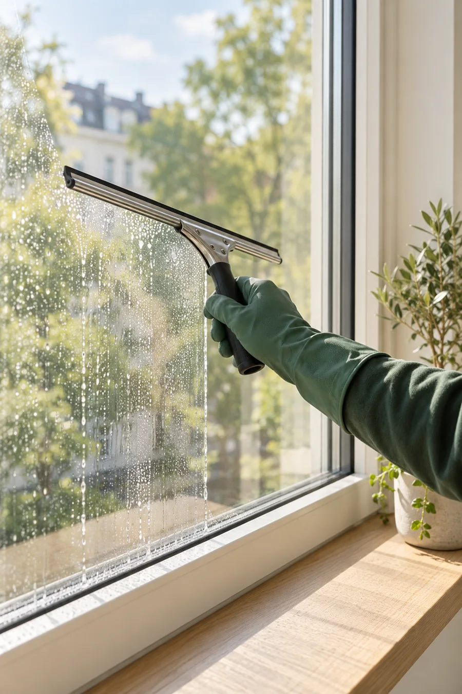
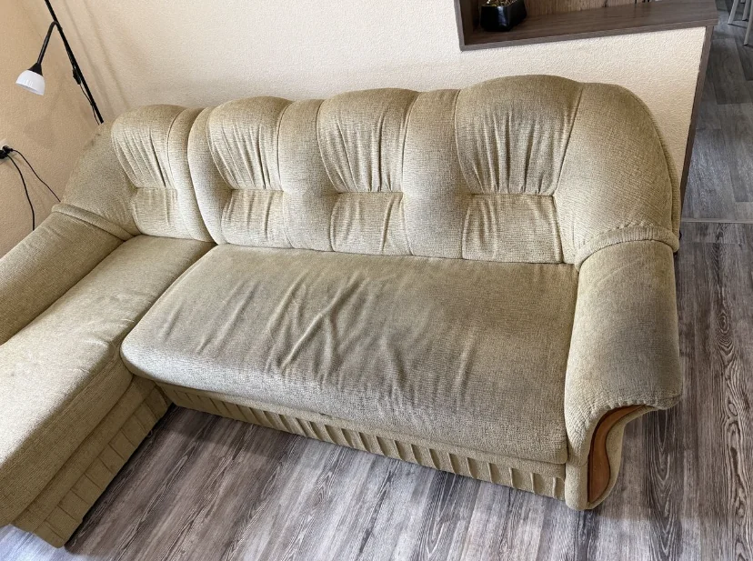
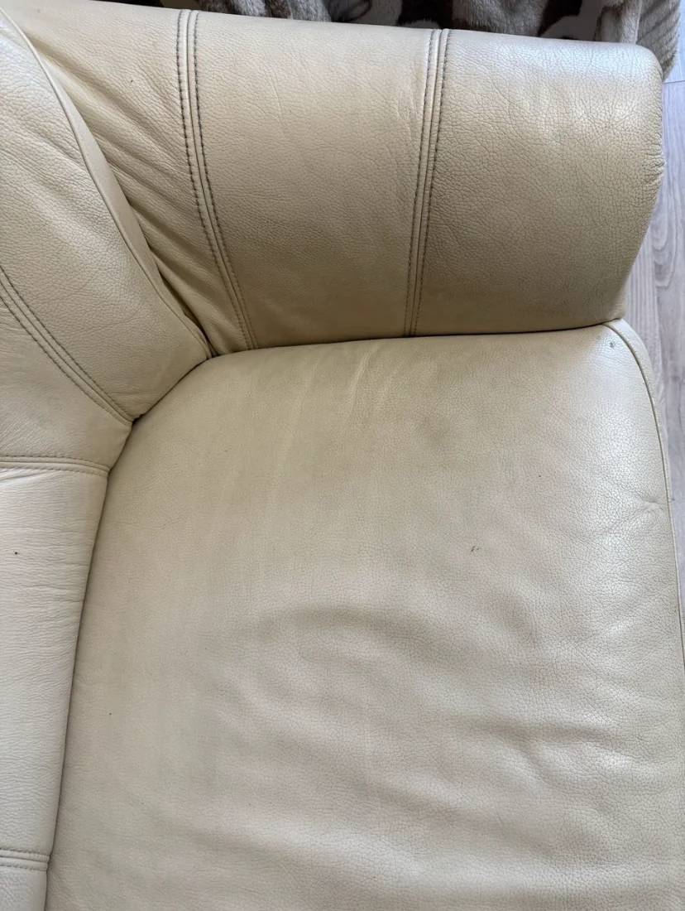
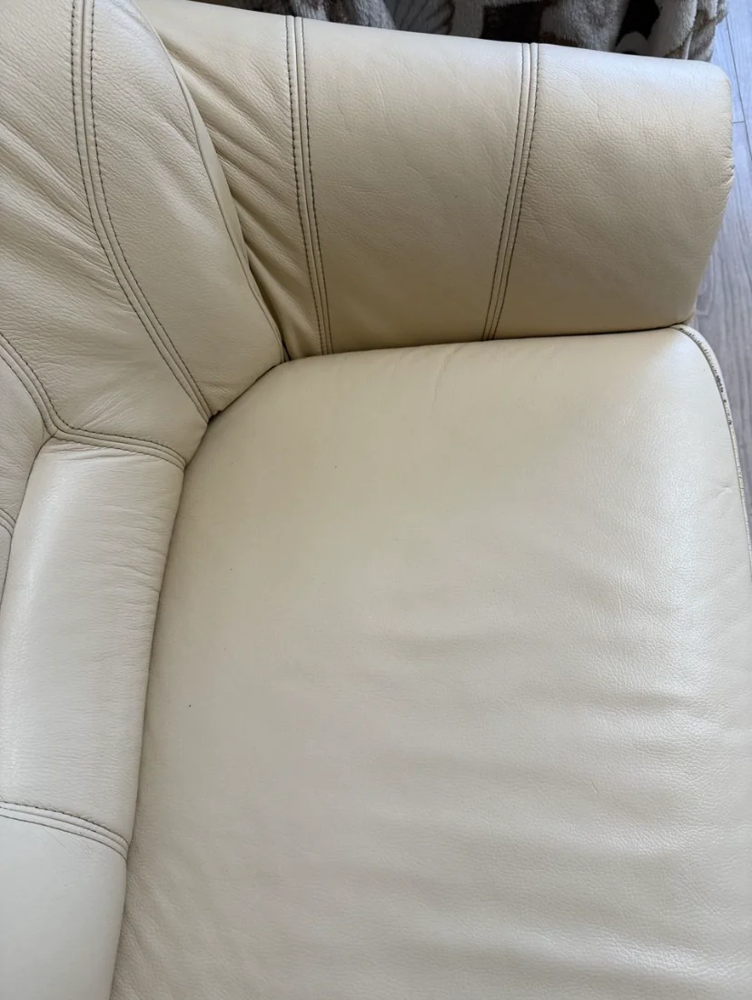
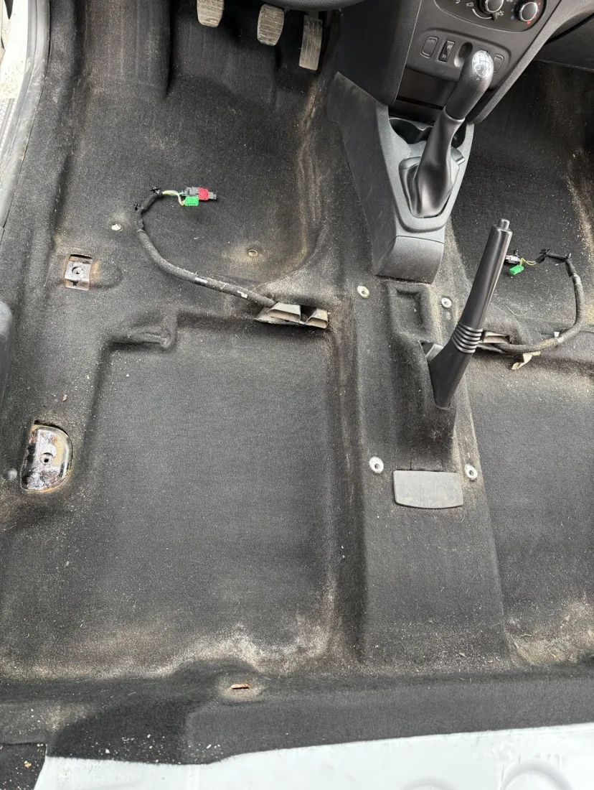
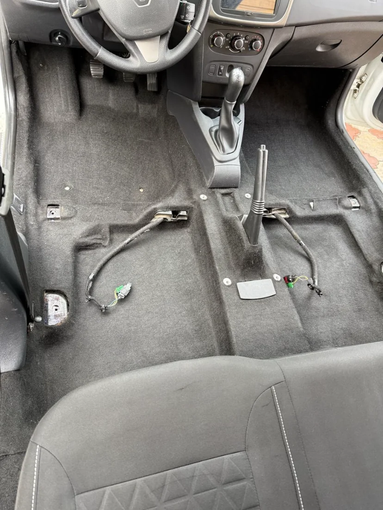

01
01Химчистка
мебели
Диваны, кресла, стулья и матрасы. Бережно очищаем обивку с выездом на дом.
Подробнее об услуге
Химчистка мебели, ковров и салона авто.
Мойка окон. С выездом и вниманием к деталям.
Стоимость и объём работ согласуем до начала чистки
Одна вещь или несколько задач сразу — подберём подход к материалу и согласуем каждый этап.
01Диваны, кресла, стулья и матрасы. Бережно очищаем обивку с выездом на дом.
Подробнее об услуге02Иллюстрация услугиОчищаем ворс и освежаем покрытие. Способ чистки подбираем под материал.
Подробнее об услуге 03
03Сиденья, обивка и напольное покрытие. Для салона, в который приятно садиться.
Подробнее об услуге
04Иллюстрация услугиСтекло, рамы и подоконники. Чистота, через которую проходит больше света.
Подробнее об услугеНужно что-то ещё? Чистим матрасы и кожаную мебель. Также можно заказать покос травы.
Обсудить вашу задачуФотографии реальных работ. Листайте примеры и сравнивайте один и тот же объект до и после чистки.
 До
До После
После ДоПосле
ДоПосле
ДоПосле До
До После
После До
До После
После До
До После
После До
До После
После
До
После
До
После До
До После
После До
До После
ПослеЛистайте или нажмите на фото, чтобы увеличить
Фото сделаны при разном освещении и ракурсе. Результат конкретной чистки зависит от материала и состояния изделия.

Сначала оцениваем материал — затем выбираем способ чистки.
Витклинер — химчистка и клининг с выездом в Витебске. Более 10 лет работаем с мебелью и покрытиями. Обсуждаем возможности чистки заранее и объясняем, что получаете в заказе.
Фото, размеры и несколько слов о загрязнениях — в Viber или по телефону.
Обсудим стоимость, условия выезда и подходящее время.
Оценим материал, обработаем загрязнения и очистим поверхность.
Покажем результат и объясним, как высушить изделие и ухаживать за ним.
Каждый диван и каждое загрязнение разные. Пришлите фотографии и размеры — обсудим цену. Итоговую стоимость согласуем до начала работы.
Получить оценку по фотоТип обивки, площадь ковра или количество окон.
Пятна, запахи и необходимость дополнительной обработки.
Адрес выезда, доступ и количество изделий.
Не нашли ответ? Расскажите нам о своей задаче — поможем разобраться.
Стоимость зависит от размера, материала и загрязнений. Пришлите в Viber общий снимок и фото пятен: обсудим объём работы и цену. Окончательную сумму согласуем до начала чистки.
Да, оказываем клининговые услуги с выездом в Витебске и области. Для мебели и покрытий уточним доступ к воде, электричеству и условия для работы. Выезд за город и условия химчистки автомобиля согласуем отдельно.
Не всегда. Результат зависит от происхождения и давности пятна, материала и предыдущих обработок. Выгорание, износ и повреждение красителя чистка не исправляет. Возможности и ограничения обсуждаем до начала работы.
Время зависит от ткани, наполнителя, объёма влажной обработки, температуры и вентиляции. Ориентир сообщим после оценки мебели. Пользоваться ей рекомендуем после полного высыхания.
Освободите доступ к мебели или покрытию, уберите личные вещи и хрупкие предметы рядом. При записи уточним доступ к воде и электричеству. Для мойки окон освободите подоконники.
Позвоните по номеру +375 (29) 597-37-13 или откройте Viber по ссылке на сайте. Можно подготовить текст заявки в форме, скопировать его и отправить в чат вместе с фотографиями. Выезд состоится после согласования деталей.
Пришлите фото в Viber — обсудим, что можно сделать, рассчитаем стоимость и подберём удобное время.
+375 (29) 597-37-13Витебск и область · выезд по договорённости
Расскажите о задаче — соберём сообщение для Viber.
Вставьте текст в чат и приложите фото. Если Viber не установлен, позвоните нам.